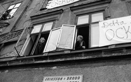
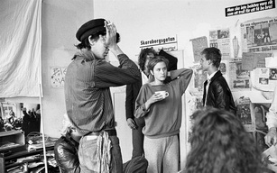

Södermalm i tid och rum
De ockuperade för en öppen stad

|
Mandra Wabäck och Joachim Berggren går igenkännande runt på en sörgårdsidyllisk gård på Skaraborgsgatan på Söder och fotograferar och berättar hur det såg ut där för trettio år sedan när de var med och i protest ockuperade de tre förfallna husen 8:an, 10:an och 12:an, avsedda att ge plats för nya "lyxbostäder", tre gamla hus (det äldsta från 1700-talet) som då hade stått tomma i många år och som skulle rivas. "Här låg caféet som brändes ned" "Här låg utedassen" "Det var där i 8:an vi höll till mest" "Elen fick vi tjuvkoppla". Minnena tränger sig på. |
Resultatet av den tre månader långa ockupation blev att husen på Skaraborgsgatan renoverades, bevarades och än i dag pryder sträckan mellan Sankt Paulsgatan och Södra latin.
|
För 30 år sedan ockuperades ett hus på Skaraborgsgatan på Söder. Det blev en språngbräda för år av utomparlamentarisk kamp.
- Ni bodde där, "psykboxen" var där och vi bodde här, säger Jocke Berggren och pekar upp mot första våningen på Skaraborgsgatan 8. Det var utgångspunkten för ett gäng ungdomar från olika delar av stan som skulle sätta historiska spår, både i stadens liv och sina egna. Året var 1985 och Mandra Wabäck, i dag 44 år, gick i nian på Östermalm och bodde i Vasastan. Hon hörde snacket på stan, Skaraborgsgatan hade ockuperats. Det lät spännande och hon åkte dit. |
 |
{kind=link}
- Jag kom dit några dagar efter att de gått in men jag kände inte en kotte. Jag bara gick in och sa hej. Klättrade över muren, uppför stegen, drog ett varv i huset. Sen blev jag kvar. Sov där och åkte till skolan på dagarna.
Jocke Berggren är ett par år äldre. Han gick på gymnasiet i Kallhäll. Det gick inte så bra, han hoppade av och började jobba på dagis, 500 meter hemifrån. - Men jag åkte ju dit från Skaraborgsgatan varje dag istället. Man ville vara där.
- Det var kallt men väldigt hemtrevligt, minns Mandra. Jag hade ett av de få rummen med gardiner. Det var madrasser på golvet och en kakelugn i hörnet, man fick springa och hämta ved hela tiden.
|
 |
I dag har de återförenats och bildat föreningen Avanti! Framåt! med syftet att göra minnena till allmängods. Projektet går under namnet Vårt 80-tal och till hösten blir det fotoutställning och stadsvandringar på temat punk och politik från åren 1985-89. Senare även en fotobok och en kortfilm.
- Jag och flera av oss gick sedan på Riddarfjärdsskolans fotolinje, vi fick låna Hasselblads- och Leica-kameror så det finns hundratals fantastiska bilder, säger Mandra som har åkt runt och grävt i lådorna hos gamla kompisar. |
{kind=link}
Ockupationen fick stor uppmärksamhet i pressen. Husen hade stått tomma länge och skulle rivas. Bidragande var också att det var den första större ockupationen i Stockholm sedan Mullvaden sju år tidigare.
- Vi blev väl bemötta i pressen och av goda grannar, berättar Mandra. Det fanns många tomma kåkar som bara stod och förföll. Många stockholmare tyckte att det var bra det vi gjorde.
För Mandra och Jocke blev huset ett nav för politisk aktivitet och en snabbkurs i demokrati och praktisk organisering. Gårdshuset blev ett kafé, el fick de lära sig att tjuvkoppla. Och de lärde sig hålla samman mot återkommande attacker från den växande nazirörelsen BSS.